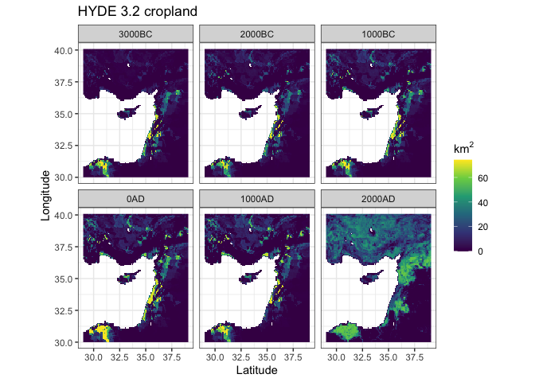
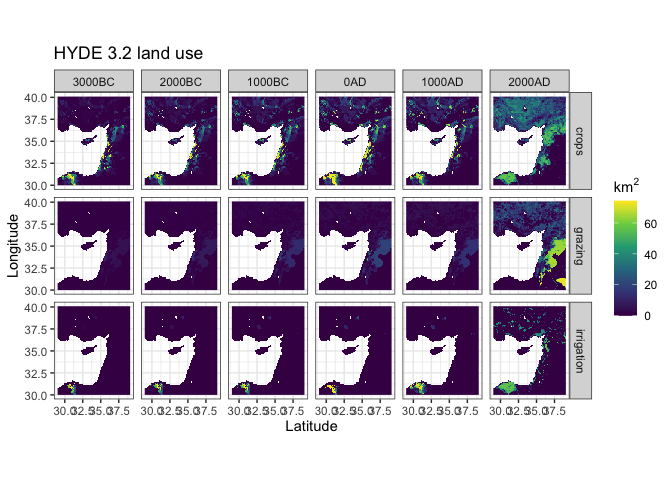
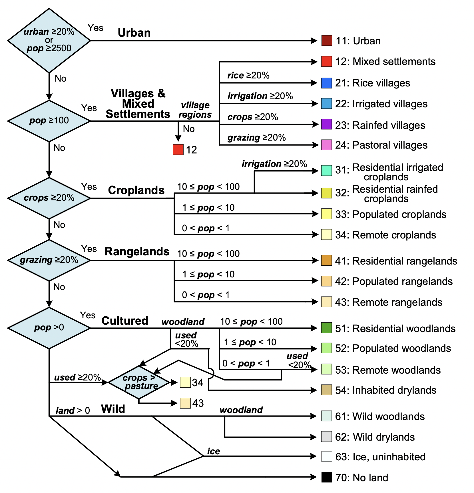
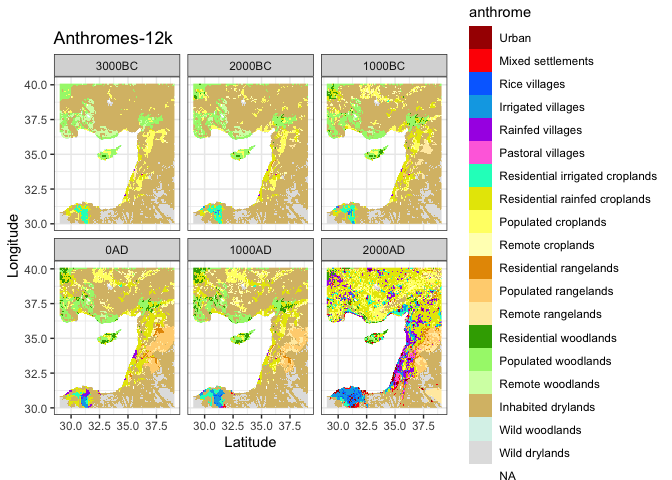

An R package for analyzing historical land use and population on regional to global scales. It includes functions to download HYDE 3.2 and Anthromes-12k data (from the Anthromes-12k-DGG repository at https://doi.org/10.7910/DVN/E3H3AK), manipulate them as spatio-temporal arrays, apply the anthromes classification, extract raster data using an equal-area discrete global grid system, and generate common summary tables and visualizations.
It is based on (and supersedes) the R research compendium used to generate the analyses and figures for:
Ellis, E.C., N. Gauthier, K. Klein Goldewijk, R. Bliege Bird, N. Boivin, S. Diaz, D. Fuller, J. Gill, J. Kaplan, N. Kingston, H. Locke, C. McMichael, D. Ranco, T. Rick, M.R. Shaw, L. Stephens, J.C. Svenning, J.E.M. Watson, (2021). People have shaped most of terrestrial nature for at least 12,000 years. PNAS. https://doi.org/10.1073/pnas.2023483118
Read below for a quick setup guide or check out the vignette on the package website for more details, documentation, and example workflows.
Installation
You can install the development version from GitHub with:
# install.packages("remotes")
remotes::install_github("nick-gauthier/anthromes")Example
Read in the anthromes data as a stars object. stars is an R package for working with space-time cubes like the HYDE 3.2 data, which are spatial rasters representing multiple time steps. A stars object prints two pieces of information, the attribute data (which is essentially a tibble that can be manipulated via typical tidyverse functions) and dimension information (which records the spatial and temporal dimensions of the object).
hyde_med
#> stars object with 3 dimensions and 6 attributes
#> attribute(s):
#> Min. 1st Qu. Median Mean 3rd Qu. Max.
#> crops 0 0.000179287 1.3989784 8.5791286 10.348840 74.3285
#> grazing 0 0.068011791 0.9421589 4.0070415 3.382091 74.0772
#> rice 0 0.000000000 0.0000000 0.1056585 0.000000 73.8234
#> pop 0 65.238454819 222.5272064 2060.4865140 620.780472 1802804.1250
#> irrigation 0 0.000000000 0.0000000 1.3722187 0.000000 74.2032
#> urban 0 0.000000000 0.0000000 0.1139881 0.000000 74.3285
#> NA's
#> crops 27132
#> grazing 27132
#> rice 27132
#> pop 27132
#> irrigation 27132
#> urban 27132
#> dimension(s):
#> from to offset delta refsys point values x/y
#> x 2509 2629 -180 0.0833333 WGS 84 FALSE NULL [x]
#> y 600 720 89.9999 -0.0833333 WGS 84 FALSE NULL [y]
#> time 1 6 NA NA NA NA 3000BC,...,2000ADYou can manipulate these data using standard dplyr functions. For example, you can use filter and mutate to calculate the total used land area (cropland, grazing land, and urban areas) in the year 2000 AD and print a summary.
hyde_med %>%
filter(time == '2000AD') %>%
transmute(used = crops + grazing + urban) %>%
pull(used) %>%
summary()
#> Min. 1st Qu. Median Mean 3rd Qu. Max. NA's
#> 0.000 8.146 35.993 32.978 55.061 74.328 4522You can easily plot these objects in ggplot using geom_stars().
ggplot() +
geom_stars(data = hyde_med) +
scale_fill_viridis_c(na.value = NA, name = expression(km^2)) +
facet_wrap(~time) +
labs(title = 'HYDE 3.2 cropland', x = 'Latitude', y = 'Longitude') +
coord_quickmap() +
theme_bw() By default, geom_stars() will only plot the first attribute. If you’d like to plot multiple attributes at a time, the easiest way is to convert the attributes to an extra dimension using stars::merge().
ggplot() +
geom_stars(data = merge(hyde_med[c(1:2,5),,,])) +
scale_fill_viridis_c(na.value = NA, name = expression(km^2)) +
facet_grid(attributes~time) +
labs(title = 'HYDE 3.2 land use', x = 'Latitude', y = 'Longitude') +
coord_quickmap() +
theme_bw()
You can easily animate these data using gganimate.
library(gganimate)
ggplot() +
geom_stars(data = hyde_med) +
scale_fill_viridis_c(na.value = NA, name = expression(km^2)) +
# use transition_states() from gganimate instead of facet_wrap to animate
transition_states(time, transition_length = 0.5) +
labs(title = 'HYDE 3.2 land use',
subtitle = 'Cropland at {closest_state}',
x = 'Latitude', y = 'Longitude') +
coord_quickmap() +
theme_bw()
Please refer to the excellent stars documentation at https://r-spatial.github.io/stars/ for more information about working with spatio-temporal arrays in R.
Anthromes classification
The main function of the package is anthrome_classify(), which applies the anthromes v2.1 classification algorithm originally presented in :
Ellis, E.C., A.H.W. Beusen, K. Klein Goldewijk, (202). Anthropogenic Biomes: 10,000 BCE to 2015 CE. Land, 9 (5). https://doi.org/10.3390/LAND9050129
And later modified in Ellis et al. 2021 above.

anthrome_classify() requires the HYDE 3.2 data in a spatio-temporal array, along with a 2-dimensional array of fixed input variables such as land area and potential natural vegetation.
anthromes <- anthrome_classify(hyde_med, inputs_med)The result is a stars object with the resulting anthromes classification, with the same spatial and temporal dimensions as the original HYDE data.
anthromes
#> stars object with 3 dimensions and 1 attribute
#> attribute(s):
#> anthrome
#> Inhabited drylands :33235
#> Residential rainfed croplands: 6460
#> Wild drylands : 4204
#> Populated woodlands : 4093
#> Populated croplands : 3842
#> (Other) : 8880
#> NA's :27132
#> dimension(s):
#> from to offset delta refsys point values x/y
#> x 2509 2629 -180 0.0833333 WGS 84 FALSE NULL [x]
#> y 600 720 89.9999 -0.0833333 WGS 84 FALSE NULL [y]
#> time 1 6 NA NA NA NA 3000BC,...,2000ADAs above, these data can be easily plotted in ggplot using geom_stars. The default anthromes color scheme is provided in the function anthrome_colors() for convenience.
ggplot() +
geom_stars(data = anthromes) +
facet_wrap(~time) +
coord_quickmap() +
scale_fill_manual(values = anthrome_colors(), drop = TRUE) +
theme_bw() +
labs(title = 'Anthromes-12k', x = 'Latitude', y = 'Longitude') Create nicely formatted summaries of the percent land area in each anthrome using anthrome_summary().
anthrome_summary(anthromes, inputs_med)
#> # A tibble: 19 x 7
#> anthrome `3000BC` `2000BC` `1000BC` `0AD` `1000AD` `2000AD`
#> <fct> [%] [%] [%] [%] [%] [%]
#> 1 Urban 0.00000… 0.00000… 0.00000… 0.00000… 0.00000… 1.34354…
#> 2 Mixed settlements 0.01036… 0.01036… 0.01036… 0.02101… 0.12557… 1.19113…
#> 3 Rice villages 0.00000… 0.00000… 0.01068… 0.08541… 0.14963… 0.82291…
#> 4 Irrigated villag… 0.00000… 0.10593… 0.28775… 0.54654… 1.05498… 5.41930…
#> 5 Rainfed villages 0.03828… 0.04896… 0.07955… 0.71232… 0.14186… 7.15692…
#> 6 Pastoral villages 0.00000… 0.00000… 0.00000… 0.00000… 0.00000… 0.97033…
#> 7 Residential irri… 1.15440… 1.28037… 1.15855… 0.56932… 1.15223… 4.03996…
#> 8 Residential rain… 2.35864… 3.55433… 7.73114… 11.82416… 9.47797… 27.57045…
#> 9 Populated cropla… 4.98353… 5.68302… 5.20414… 4.61584… 5.16068… 10.57136…
#> 10 Remote croplands 0.52144… 1.46686… 2.47152… 3.03748… 3.70718… 2.08692…
#> 11 Residential rang… 0.00000… 0.07203… 0.05169… 1.08601… 0.38244… 2.43628…
#> 12 Populated rangel… 0.00000… 0.06130… 0.18712… 5.52944… 3.61036… 4.00107…
#> 13 Remote rangelands 0.23737… 0.28655… 1.82015… 1.32595… 2.42416… 3.98353…
#> 14 Residential wood… 0.04704… 0.32915… 1.17174… 2.01134… 2.73228… 1.57193…
#> 15 Populated woodla… 7.04758… 8.18503… 8.48347… 7.34081… 6.68319… 1.26049…
#> 16 Remote woodlands 4.18605… 2.13041… 0.51071… 0.45298… 0.25802… 0.10423…
#> 17 Inhabited drylan… 71.72798… 69.11729… 63.17898… 53.58786… 55.78579… 19.77959…
#> 18 Wild woodlands 0.12060… 0.11407… 0.10529… 0.09494… 0.09072… 0.06987…
#> 19 Wild drylands 7.56668… 7.55427… 7.53710… 7.15851… 7.06286… 5.62007…How to cite
This package is currently in development, with submission to rOpenSci planned shortly. In the interim, please cite the original R compendium at:
Gauthier, Nicolas (2021). Anthromes 12K DGG (V1) analysis code and R research compendium. Online at Harvard Dataverse, https://doi.org/10.7910/DVN/6FWPZ9